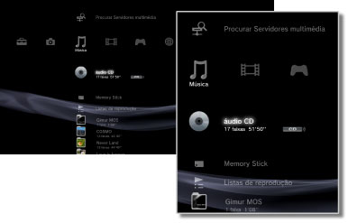

Música > Categoria de música
Categoria de música
Os ícones seguintes são apresentados no menu  (Música). Os ícones apresentados variam consoante as condições de utilização.
(Música). Os ícones apresentados variam consoante as condições de utilização.

 |
(Nome do Título) | Apresentar o painel de controlo em tamanho reduzido. Este ícone só é apresentado quando estiver a ser reproduzido conteúdo de música. |
|---|---|---|
 |
Pesquisar Servidores multimédia | Inicie uma procura por Servidores Multimédia DLNA que estão ligados na mesma rede. |
 |
Servidor multimédia | Ligue aos Servidores Multimédia DLNA e reproduza a música aí guardada. O ícone apresentado varia dependendo do tipo de servidor. |
 |
(nome do título) | Reproduz um Super Audio CD. |
 |
(título de CD) | Reproduz um áudio CD. |
 |
Disco de Dados | Reproduza ficheiros de música guardados num suporte de disco gravável e compatível, como um CD-R ou DVD-R. |
|
Disco DSD | Reproduza ficheiros de música em formato DSD guardados num disco compatível, como por exemplo um DVD-R. |
 |
Memory Stick™ | Reproduz ficheiros de música guardados em suportes Memory Stick™.* |
 |
SD Memory Card | Reproduz ficheiros de música guardados num SD Memory Card.* |
 |
CompactFlash® | Reproduz ficheiros de música guardados em CompactFlash®.* |
 |
PSP™ (PlayStation®Portable) | Reproduz ficheiros de música guardados num suporte Memory Stick™ de um sistema PSP™. |
 |
PSP™(PlayStation®Portable) | Reproduz ficheiros de música guardados na memória do sistema PSP™go. |
 |
Câmara Digital | Reproduz ficheiros de música guardados numa câmara digital. |
 |
WALKMAN®/ATRAC Audio Device (WALKMAN®) | Reproduzir ficheiros de música num WALKMAN®/ATRAC Audio Device (WALKMAN®). |
 |
ATRAC Audio Device | Reproduzir ficheiros de música guardados num ATRAC Audio Device. |
 |
Dispositivo USB | Reproduz ficheiros de música guardados num dispositivo de armazenamento de massa USB. |
 |
Listas de reprodução | Pode criar listas de reprodução, ou editar ou reproduzir listas de reprodução que tenha criado. |
 |
(pasta) | Este ícone é apresentado para pastas que tenham sido criadas no suporte de armazenamento utilizando um PC. |
 |
(ficheiros guardados no disco rígido) | Reproduz ficheiros de música guardados no disco rígido do sistema PS3™. Quando os dados de imagem estão disponíveis, são apresentadas imagens em miniatura. |
| * |
Em alguns modelos é necessário um adaptador USB apropriado (não incluído) para usar suportes de armazenamento. Quando utilizados com um adaptador USB, os suportes de armazenamento serão apresentados como |
|---|
 (Dispositivo USB).
(Dispositivo USB).Notas
- Para mais informações sobre a norma DLNA, consulte
 (Definições) >
(Definições) >  (Definições de Rede) > [Conexão de Servidor multimédia] neste manual.
(Definições de Rede) > [Conexão de Servidor multimédia] neste manual. - Em raras ocasiões, os discos e outros suportes podem não funcionar correctamente quando reproduzidos no sistema PS3™. Isto deve-se principalmente às variações do processo de fabrico ou da codificação do software.
- Quando o áudio de Super Áudio CD é emitido do conector digital out (optical), a reprodução é simples (reprodução a 44,1 kHz com 16 bits).
Atenção
Alguns sistemas PS3™ não reproduzem Super Audio CD. Para obter detalhes, consulte [Tipos de discos reproduzíveis].